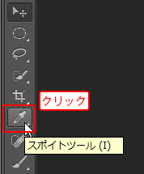
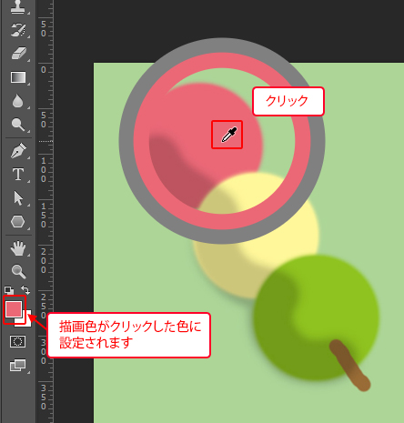
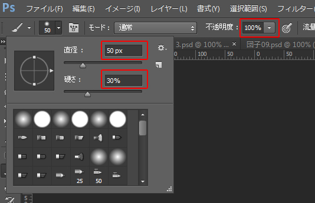
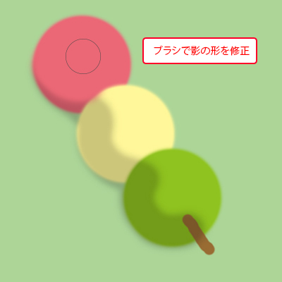

本項では、画像上のカラー情報を取得するスポイトツールについて学習します。
[スポイトツール]を使用し、すでに描画済みのピンク色のお団子から色を取得します。
まずは[ツールパネル]の[スポイトツール]を選択します。

影がついていない、ピンク色のお団子部分をクリックします。
クリックした場所のカラーが「描画色」に設定されます。

スポイトツールを使用すると、画像上の任意のカラーをクリックするだけで、
そのカラーを「描画色」として読み取ります。
［ブラシツール］を使用してお団子の影の部分を「描画色」と同じ色に塗り直します。
ブラシの「直径」を《50px》、「硬さ」を《30%》、「不透明度」を《100％》に設定します。

お団子の影の部分を、上塗りして形を整えていきましょう。
一度のドラッグできれいにできない場合は、繰り返しドラッグすることで、
よりきれいに仕上げていくことができます。

同様に、黄色のお団子、緑色のお団子もスポイトツールで色を読み取り、
見本のように影を修正してみてください。
引き続きこのファイルを使用します。
ファイルは閉じずに次の項へ進んでください。